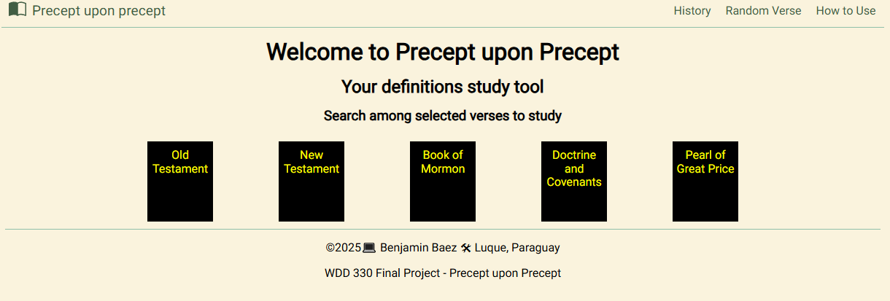
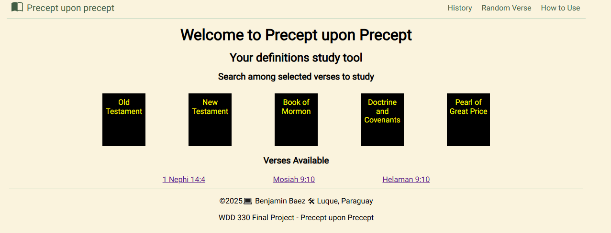
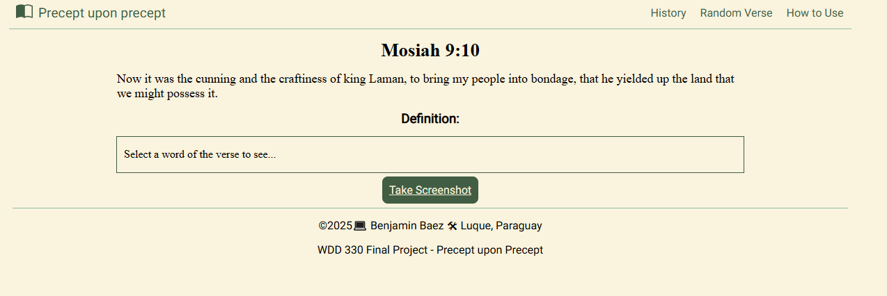
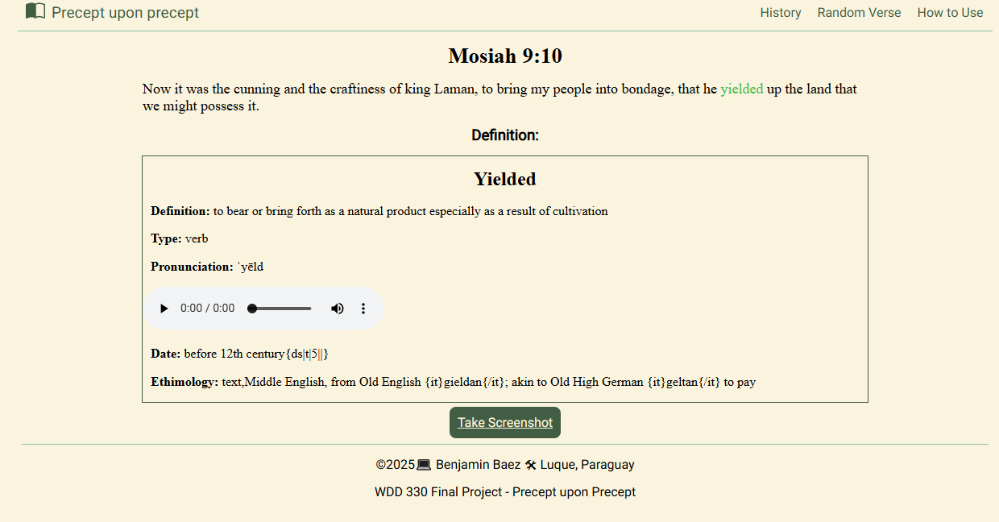

How to Use
Step 1: Opening the App, in the Home Page, you will see the Canonical books, select one to continue
Step 2: Once you selected a book, a few verses will be displayed, select one to read it.
Step 3: You will be taken to the Verse Page, there you can click on a word to look in the dictionary.
Step 4: You can play the audio, and take a screenshot.
Thanks for using the App!
Hint: If you don't know what to read, you can always click on "Random Verse" in the navigation menu, also, don't forget to see your history to know which verses you were studying recently.